GILE DOCUMENTATION
Biomes & Entities
Explore the Ghostly Thickets, Moon Deserts, and End Leftovers introduced by the mod.
1. End Threshold (Overworld Biome)
Fragments of the Moon that crashed into the Overworld! This night-sky-colored biome brings a piece of the End dimension right to your front door.
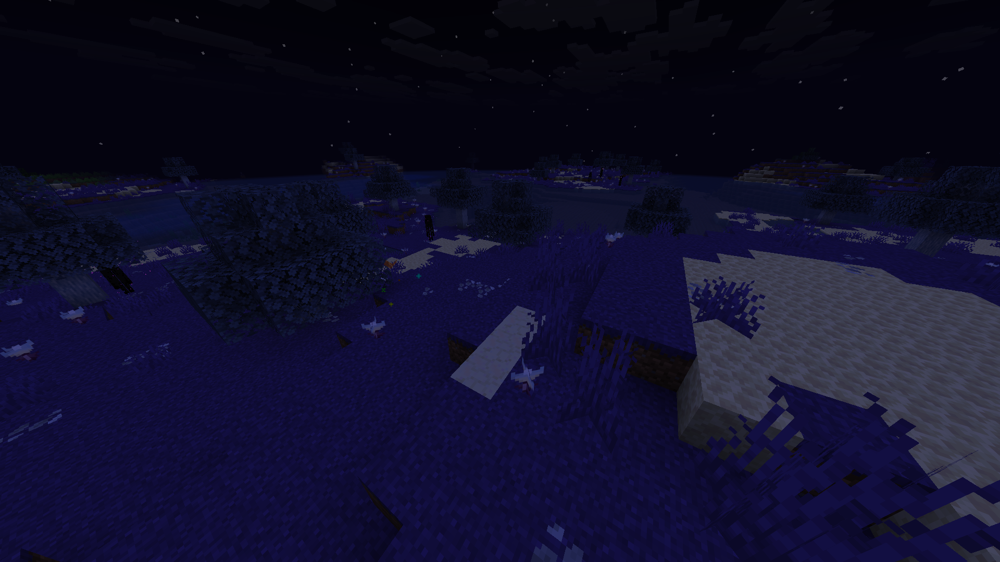
- Terrain: Massive End Stone and Moon Sand blobs integrated into the surface.
- Flora: Normal and Glowing Chorus plants grow rarely here. Inverted Oak trees with normal grass and moon flowers are much more frequent.
- Mobs: In night time endermen spawn. But there is also the Glitter mob, that can only be found in this biome. A very small peacefull flying mob. Drops glitter particles while flying and has no constant color - it is changing them all the time. With only 1 heart (2 HP) - it drops Dust, that is needed to craft the Jar Of Glitters - a way to bring some glitters in your home! If not that, there is also Glitter Block and Glitter Carpet.
Inverted Oak Wood
Its unique Inverted Oak wood have its proper wood type, for every vanilla recipe as expected. Except boat, because there is no water in the End.
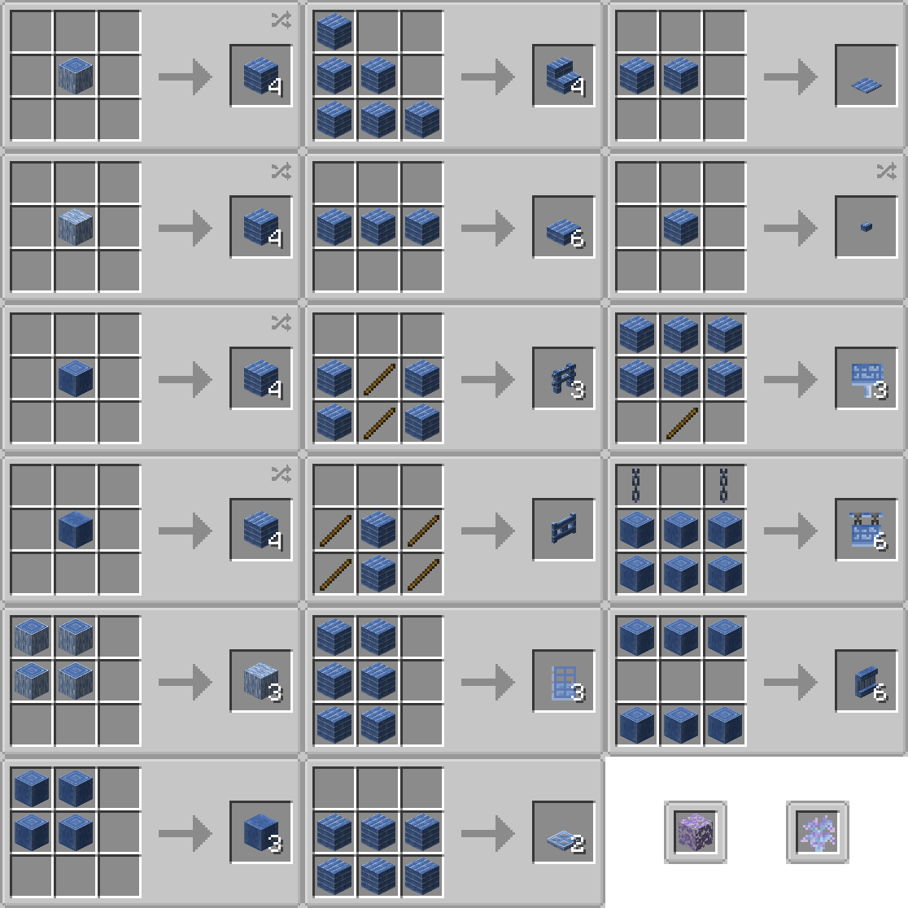
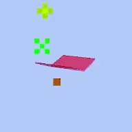
Glitter
Flying · Peaceful · Overworld 2 HP
2 HP
Spawns in small groups only in the End Leftovers Biome.
Idles everywhere with no goal. Exists just for the ambience of the biome and of your house too.
Have slow RGB texture layer animation and a semi-transparent model.
 0-2
0-2
2. The Moon (General Environment)

In GILE, the Outer End Islands represent The Moon. (The Main End Island remains strict vanilla). Here, you will find Primogem Ore, moon sand blobs, glowing flora, and the most powerful material in the mod: Enderite.

Enderite is the ultimate late-game tier, acting as a direct upgrade to Netherite. You can craft full Enderite tool, weapon, and armor sets. Needs Netherite Tool Tier to be mined.

Allows player to progress its gear to the Enderite tier. The only really needed things from the Nether to progress with GILE - Nether Upgrade Smithing Template & Ancient Debris for Netherite.

| Item | Recipe / Use |
|---|---|
| Fate Upgrade Smithing Template | Used at a Smithing Table to upgrade Netherite gear to Enderite gear. |
| Enderite Shard | Drops 1-2 from every Enderite Ore block. It is used as Nuclear Cannon ammo & in the recipe of the ingot. |
| Enderite Ingot | The strongest tier ingot in the game, crafted with 4 Enderite Shards & 4 Crystals. |
| Enderite Block | The most valuable block of the game, harder then Netherite analog. |
| Ore Generation | Generates everywhere on the Moon (the Outer End), as rarely as Primogem Ore, but in veins 4 times smaller - from 1 to 3 ore blocks per vein. |

Across all Outer End Islands (The Moon), independent mobs can spawn alongside standard generation. Some of these lunar creatures have also adapted to spawn in specific Overworld biomes.


Void Slime
Ground · Hostile · The End
10 HP
Spawns in small groups only on The Moon as well as in the Ghostly Thickets biome.
Jumps around everywhere with no goal. Sometimes jump into The Void to reunite with it.
On targeting player jump slowly towards it. Can follow in the range of 24 blocks. On hit makes a pretty strong knockback to the player.
 0-4
0-4

Ender Fly
Ghost · Hostile · The End
 15 HP
15 HP
Spawns in tiny groups only on The Moon as well as in the Dark Forest and Mushroom Fields biomes.
Flies on place looking for a player to attack. Don't move protecting its territory.
On targeting player shoots 4 consecutive stings, each deals 1 Heart (2 HP) of damage. Chases the player when spotted. Stings disappear on touching the ground.
 2-4
1-3
2-4
1-3


Moth
Flying · Peaceful · Overworld / The End
6 HP
Spawns in tiny groups only on The Moon as well as in the Dark Forest and Mushroom Fields biomes.
Idles everywhere with no goal. Flies everywhere between moon flowers and chorus plants.
Can be bred using moon flowers. If named "Radiance", changes scale and texture.
 2-4
2-4
P.S. Moth can also spawn in the Overworld - in Dark Forest and Mushroom Fields biomes. That means you can use its drops even before getting to the Moon.

3. Ghostly Thickets
A dense, eerie biome featuring unique atmospheric effects, distinct vegetation, and specialized wood.

- Vegetation: Features the complete Ghostly Wood set (logs, planks, leaves, doors, etc.) and native plants: End Grass Block, End Grass, Tall End Grass, Moon Flowers, Gloomy Flowers.
- Atmosphere: Custom clouds and star features are exclusive to this biome. There are also Ghostly Bubbles particles flying in its atmosphere.
- Fauna: Hovering Ghosts, Luminous, Gloomy Lynx & Endermen.
Ghostly Wood
Its unique Ghostly wood have its proper wood type, for every vanilla recipe as expected. Except boat, because there is no water in the End.

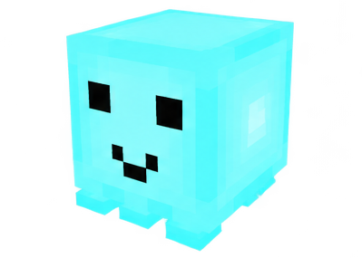
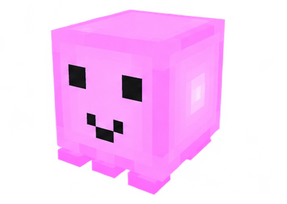
Luminous
Ghost · Peaceful · The End
14 HP
Spawns in pretty big groups only in the Ghostly Thickets biome.
Idles everywhere with no goal creating the ambience af the biome. Very light, so gravity is very weak against them.
Can be bred using star fragments. It's outside layer imitates glowing in the darkness, does not creates shadows.
1-5


Hovering Ghost
Ghost · Peaceful · Overworld / The End ×15
30 HP
Spawns in tiny groups only in the Ghostly Thickets biome.
Idles everywhere with no goal. Wanders everywhere between ghostly trees and end grass.
Can be tamed and bred using jelly, that drops from ghostly leaves. When tamed and clicked on with a saddled, can be ridden by one or two players. Saddle can be taken off using shears. Flies in the direction its front holding a jelly on a stick rider is looking. If named "Nyan Cat", changes texture & on riding makes a rainbow trail and a plays legendary music.
2-7

Gloomy Lynx
Ghost · Hostile · The End
24 HP
Spawns in tiny groups only in the Ghostly Thickets biome.
Hunts players and every peaceful ghost it sees. Can team up with its relatives.
Can be bred using gloomy flowers. However still attacks player.
2-6
 0-1
0-1
4. Moon Desert
An arid landscape composed entirely of lunar materials.
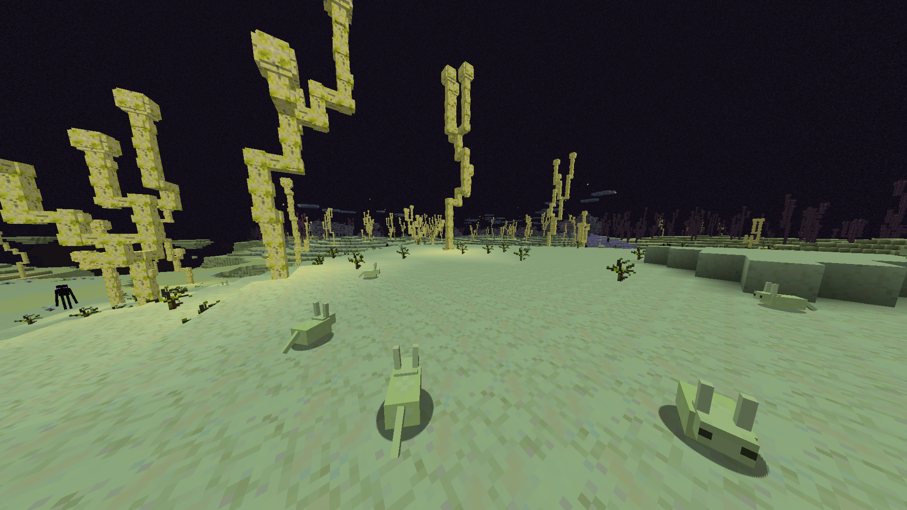
- Blocks: Primarily made of Moon Sand and Moon Sandstone underneath it.
- Flora: Dry Flowers and Glowing Chorus plants populate the dunes.
- Fauna: A specific mob native to the Moon Desert can also be found wandering here. Jerboa
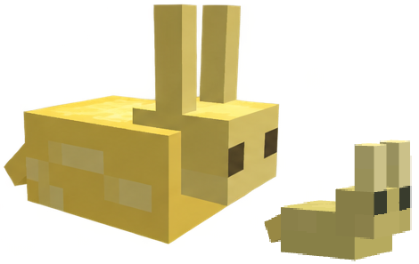
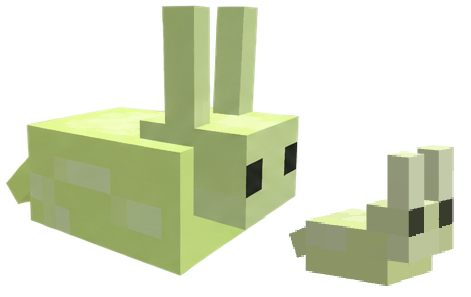
Jerboa
Ground · Peaceful · Overworld / The End
6 HP
Spawns in tiny groups only in the Moon Desert biome.
Wanders around in any desert. Have two variants, depending on the dimension it spawned.
Can be bred using only dry flowers. If not holding a dry flower, hides in any sand. If not on sandy ground, tries to find it, fleeing with double speed from the danger.
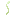
0-1 0-4
0-4
P.S. Another Jerboa type spawns in the Overworld - Desert pale yellow one. Spawns in any mesa or desert biome. The Moon type is slightly green-ish.
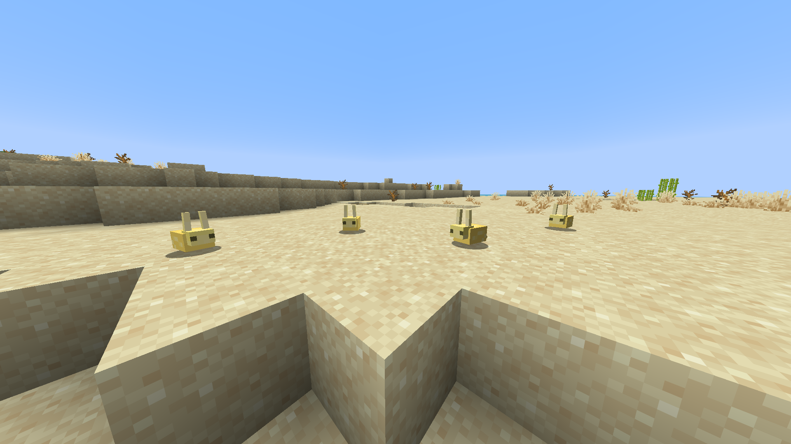